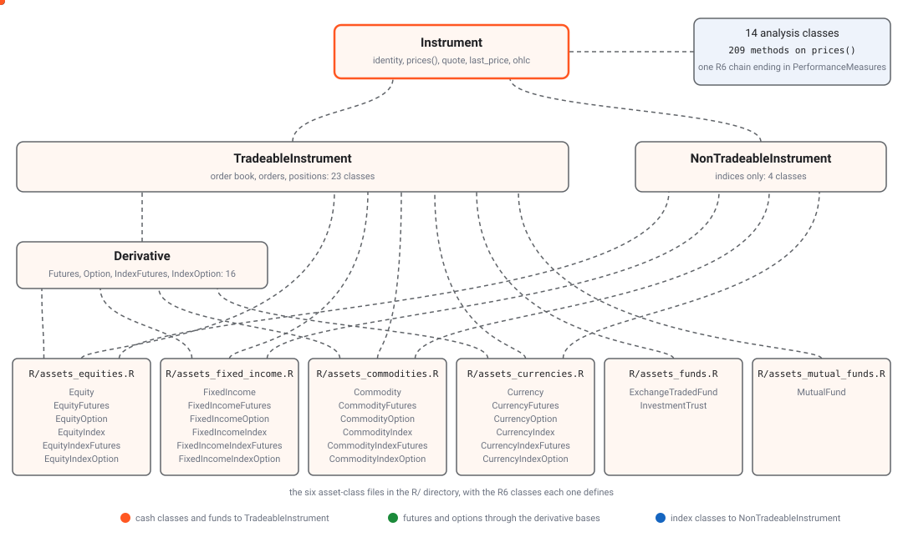

An instrument in this package is an R6 object whose class says what
kind of contract it is. There is a class for a share, one for a share
future, one for an option on an index, and so on, 27 classes in all,
spread over six family files in the package’s R/ directory,
from R/assets_equities.R to
R/assets_mutual_funds.R. You pick the class, give its
$new() the few fields that identify one contract, and the
constructor asks UBI which instrument that is. You never type a segment
name such as nse_equity_index_options yourself, because the
class already knows it.
The classes look alike, but what works on each one does not. UBI has live quotes for some segments and not others, stores candles for only a few, and cannot send an order for several kinds of instrument even though the class inherits the order methods. This page puts all of that in one place, and each family page explains the reasons.
How the classes fit together
Every class inherits from one of two base classes. A class whose
contracts can be traded inherits TradeableInstrument,
which adds the order book, orders, positions and the price wrappers. The
sixteen futures and option classes reach it through a layer of derivative base classes, Futures, Option, IndexFutures and
IndexOption on
a shared Derivative, which
add the expiry, underlying, basis and greeks members. The discovery
functions, such as EquityOption$chain(), are written out on
each family class’s generator, because R6 generators do not inherit
functions. An index inherits NonTradeableInstrument,
which refuses anything that is not an index and adds only the
constituents active binding described below. Both inherit
Instrument,
which holds the identity fields, the candles and the quote. R6 allows a
class only one parent, so the fourteen analysis classes described in Analysis form a single chain, which starts from
the small root class PriceAnalysis
and ends at PerformanceMeasures,
and Instrument inherits the end of it.
The animated diagram below shows the six family files feeding their
classes up through the derivative base classes and the two tradeable and
non-tradeable classes into Instrument. Orange dots follow
the cash classes and the funds straight up to
TradeableInstrument, green dots follow the sixteen futures
and option classes up through the derivative base classes, and blue dots
follow the four index classes up to NonTradeableInstrument.
The orange dots entering Instrument from the right are the
fourteen analysis classes it inherits. The
instrument model shows every class by name.

The funds file has only two classes and the mutual funds file only one, because UBI carries no futures or options on a fund, a trust or a mutual fund. The four families with derivatives each have six classes, following the same pattern: a cash instrument, its futures and its options, and an index, its futures and its options. The instrument model explains the base classes in more depth.
The whole matrix
The table below lists all 27 classes. “Named by” gives the constructor’s identity arguments, every one of which is required. The last five columns say whether UBI serves a live quote, whether it stores candles, whether an order for the class can actually be placed, whether the class carries the holdings members, and which discovery functions its generator offers.
In the table, “yes” and “no” mean what they say, and “empty” means the segment holds no instruments at all in UBI, so the class resolves nothing today.
| Class | File | UBI segment | Base | Named by | Quotes | Candles | Orders | Holdings | Discovery |
|---|---|---|---|---|---|---|---|---|---|
Equity |
R/assets_equities.R |
equities |
Tradeable | exchange, symbol | yes | yes | yes | yes | search |
EquityFutures |
R/assets_equities.R |
equity_futures |
Tradeable | exchange, underlying, expiry | yes | not checked | yes | no |
expiries, contracts
|
EquityOption |
R/assets_equities.R |
equity_options |
Tradeable | exchange, underlying, expiry, strike, option type | yes | not checked | yes | no |
expiries, strikes, chain
|
EquityIndex |
R/assets_equities.R |
equity_indices |
NonTradeable | exchange, symbol | yes | yes | no | no | search |
EquityIndexFutures |
R/assets_equities.R |
equity_index_futures |
Tradeable | exchange, underlying, expiry | yes | not checked | yes | no |
expiries, contracts
|
EquityIndexOption |
R/assets_equities.R |
equity_index_options |
Tradeable | exchange, underlying, expiry, strike, option type | yes | not checked | yes | no |
expiries, strikes, chain
|
FixedIncome |
R/assets_fixed_income.R |
fixed_income |
Tradeable | exchange, symbol (an ISIN) | no | no | no | yes | search |
FixedIncomeFutures |
R/assets_fixed_income.R |
fixed_income_futures |
Tradeable | exchange, underlying, expiry | yes | no | yes | no |
expiries, contracts
|
FixedIncomeOption |
R/assets_fixed_income.R |
fixed_income_options |
Tradeable | exchange, underlying, expiry, strike, option type | yes | no | yes | no |
expiries, strikes, chain
|
FixedIncomeIndex |
R/assets_fixed_income.R |
fixed_income_indices |
NonTradeable | exchange, symbol | no | no | no | no | search |
FixedIncomeIndexFutures |
R/assets_fixed_income.R |
fixed_income_index_futures |
Tradeable | exchange, underlying, expiry | yes | no | yes | no |
expiries, contracts
|
FixedIncomeIndexOption |
R/assets_fixed_income.R |
fixed_income_index_options |
Tradeable | exchange, underlying, expiry, strike, option type | empty | empty | empty | no |
expiries, strikes, chain
|
Commodity |
R/assets_commodities.R |
commodities |
Tradeable | exchange, symbol | no | no | no | no | search |
CommodityFutures |
R/assets_commodities.R |
commodity_futures |
Tradeable | exchange, underlying, expiry | yes | yes | yes | no |
expiries, contracts
|
CommodityOption |
R/assets_commodities.R |
commodity_options |
Tradeable | exchange, underlying, expiry, strike, option type | yes | yes | yes | no |
expiries, strikes, chain
|
CommodityIndex |
R/assets_commodities.R |
commodity_indices |
NonTradeable | exchange, symbol | no | no | no | no | search |
CommodityIndexFutures |
R/assets_commodities.R |
commodity_index_futures |
Tradeable | exchange, underlying, expiry | yes | yes | yes | no |
expiries, contracts
|
CommodityIndexOption |
R/assets_commodities.R |
commodity_index_options |
Tradeable | exchange, underlying, expiry, strike, option type | yes | yes | yes | no |
expiries, strikes, chain
|
Currency |
R/assets_currencies.R |
currencies |
Tradeable | exchange, symbol | no | no | no | no | search |
CurrencyFutures |
R/assets_currencies.R |
currency_futures |
Tradeable | exchange, underlying, expiry | nse only | no | yes | no |
expiries, contracts
|
CurrencyOption |
R/assets_currencies.R |
currency_options |
Tradeable | exchange, underlying, expiry, strike, option type | nse only | no | yes | no |
expiries, strikes, chain
|
CurrencyIndex |
R/assets_currencies.R |
currency_indices |
NonTradeable | exchange, symbol | empty | empty | empty | no | search |
CurrencyIndexFutures |
R/assets_currencies.R |
currency_index_futures |
Tradeable | exchange, underlying, expiry | empty | empty | empty | no |
expiries, contracts
|
CurrencyIndexOption |
R/assets_currencies.R |
currency_index_options |
Tradeable | exchange, underlying, expiry, strike, option type | empty | empty | empty | no |
expiries, strikes, chain
|
ExchangeTradedFund |
R/assets_funds.R |
exchange_traded_funds |
Tradeable | exchange, symbol | yes | yes | yes | yes | search |
InvestmentTrust |
R/assets_funds.R |
investment_trusts |
Tradeable | exchange, symbol | yes | no | yes | yes | search |
MutualFund |
R/assets_mutual_funds.R |
mutual_funds |
Tradeable | exchange, symbol (a scheme code) | no | no | limit price only | yes | search |
A few cells need a word of explanation, because the short form hides a condition.
-
Candles on equity derivatives are marked “not
checked”. UBI’s own documentation says no derivative bars are
stored, but the commodity derivatives were measured on 2026-09-20 and do
have candles, so that statement is out of date. Nobody has run
prices()on an equity future or option, from this package or from the Python library it was ported from, so the four cells are left unverified rather than guessed.EquityandEquityIndexdo have candles: RELIANCE’s were captured for the Equities page, and NIFTY’s were used for the beta check on 2026-09-14. -
“Orders” means an order can actually be placed.
Every class built on
TradeableInstrumenthasplace_order()and the thirty-two price wrappers, includingCommodity,CurrencyandFixedIncome. ForCommodityandCurrency, UBI refuses the order. ForFixedIncome, the only broker carrying cash bonds has no order symbol for them, so there is no broker to send the order to; this was read from the instrument data rather than tested. The cells therefore say no, and the family pages give the reasons. - The fixed income derivatives are marked as orderable, with a caution. UBI appears to route them to the wrong venue. This was read from UBI’s source and has never been tested with a real order, as the Fixed income page explains.
-
A mutual fund order is an ordinary
cncorder. It has no quote, so it needs a limit price, and whether a broker treats it as a subscription has not been tested.
Coverage by family
The table below counts, for each family, how many of its classes have each capability. The first count in each row is the number of classes that resolve any instrument at all, so it shows how many of the family’s classes are more than placeholders today. Candles on the four equity derivative classes are not counted, because they have not been checked.
| Family | Classes | Resolve instruments | Live quotes | Candles | Can be ordered | Holdings |
|---|---|---|---|---|---|---|
| Equities | 6 | 6 | 6 | 2 | 5 | 1 |
| Fixed income | 6 | 5 | 3 | 0 | 3 | 1 |
| Commodities | 6 | 6 | 4 | 4 | 4 | 0 |
| Currencies | 6 | 3 | 2 | 0 | 2 | 0 |
| Funds and trusts | 2 | 2 | 2 | 1 | 2 | 2 |
| Mutual funds | 1 | 1 | 0 | 0 | 1 | 1 |
Three patterns stand out in the table. Equities are the only family where nearly everything works. Commodities and currencies share a shape, in which only the derivatives are real contracts, but commodity derivatives have candles and currency derivatives do not. And holding is a separate idea from trading: a mutual fund can be held but has no quote, while a commodity future can be traded but never held.
Holdings and positions are different things
A holding is something kept in the demat account overnight and
beyond, such as shares bought for delivery. A position is what an order
leaves open in a trading day or a derivatives contract, such as a long
future. UBI reports holdings only for its cash segments, which are
equities, exchange traded funds, investment trusts, mutual funds, fixed
income and the catch-all uncategorised, so only the five
classes on those segments carry the holdings members. Every class built
on TradeableInstrument has the position members. Holdings and Positions describe both sets.
Indices and funds link to what they hold
An index, an exchange traded fund and a mutual fund each have two
sides: the one official price the exchange or the fund house publishes,
and the list of instruments behind that price. UBI stores only the
first, so the list is kept in this project’s MongoDB as an asset basket and reached through a
constituents active binding. The table below shows which
classes have that active binding and what it returns.
| Class | Where constituents comes from |
What it returns |
|---|---|---|
EquityIndex, FixedIncomeIndex,
CommodityIndex, CurrencyIndex
|
NonTradeableInstrument,
so every index class has it |
An Index basket,
or NULL when none is stored |
ExchangeTradedFund |
ExchangeTradedFund
itself |
An ExchangeTradedFundConstituents
basket, or NULL when none is stored |
MutualFund |
MutualFund
itself |
A MutualFundConstituents
basket, or NULL when none is stored |
The active binding reads MongoDB and UBI on every access, and the
basket’s linked_instrument is the instrument again, so the
two sides point at each other while the official price stays on the
instrument. InvestmentTrust has no
constituents. A fund’s constituents are not the same thing
as its holdings, which are the units of the fund this
account owns.
The families
Each family page lists its classes, explains how they are named, and records what UBI does and does not have for them. The table below links to the six pages and says in a sentence what each family is like.
| Family | What it covers |
|---|---|
| Equities | Shares, indices, and the futures and options on each. It is the one family where quotes, candles, orders and holdings all work. |
| Fixed income | Bonds named by ISIN, rate indices, and interest rate futures and options. Nothing has candles, and a cash bond has no quote. |
| Commodities | MCX, NCDEX and NSE commodity derivatives, ordered in whole lots of quotation units. The derivatives have candles. |
| Currencies | Seven currency pairs and the bse’s over-the-counter variants. Half
the family is empty, and lot_size is a trap. |
| Funds and trusts | Exchange traded funds and investment trusts, which trade and are held exactly like shares. |
| Mutual funds | Schemes named by exchange code, held rather than traded, with no quote and no candles. |
What is not covered
UBI has one more segment, uncategorised, which collects
instruments its mapping could not place anywhere else. It has no class
here, because UBI does not accept orders for it. Every asset class the
old tradingmachine project had is ported to the Python library, and
every class of the Python library is ported to this package, so this is
the only gap.